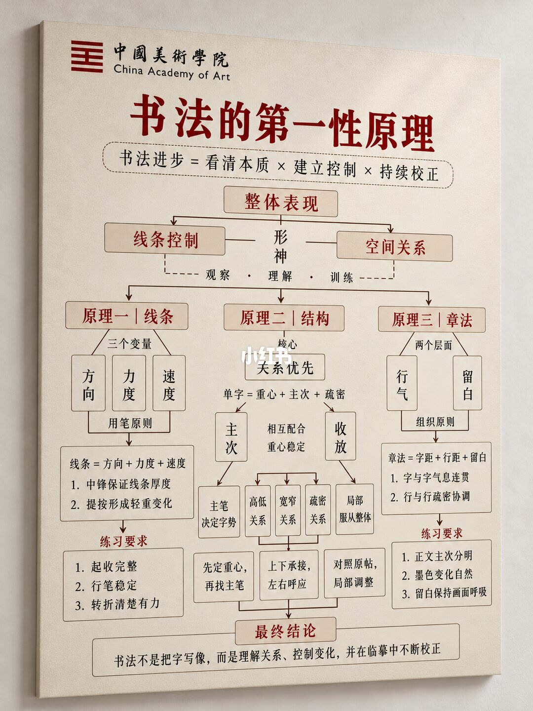
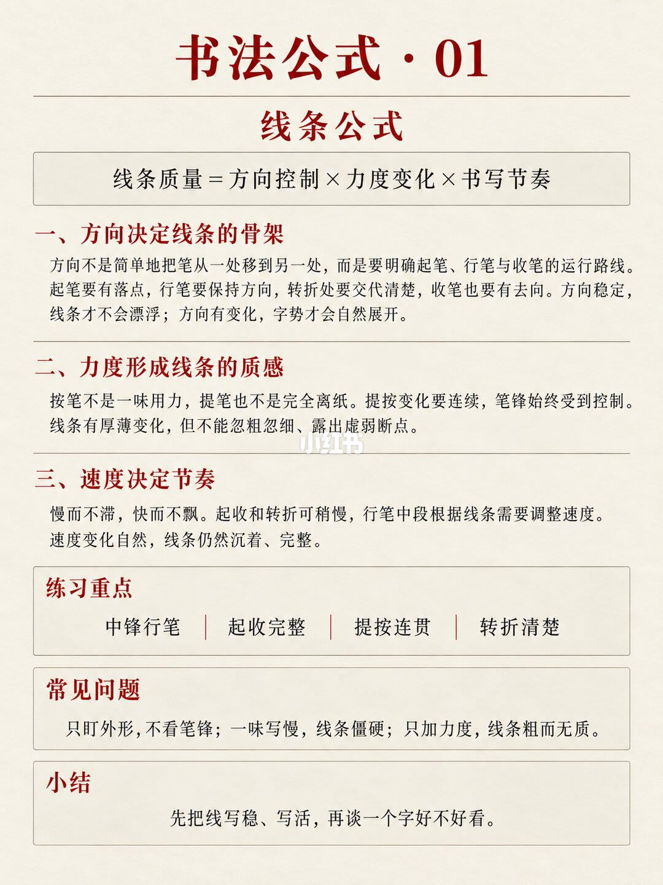
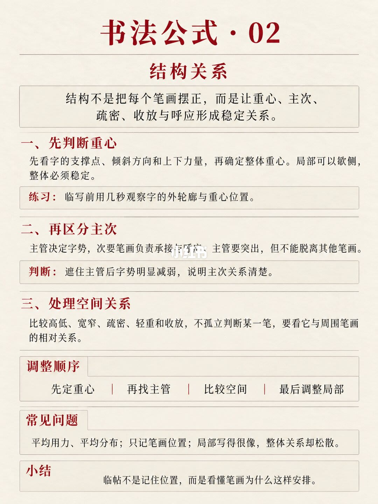
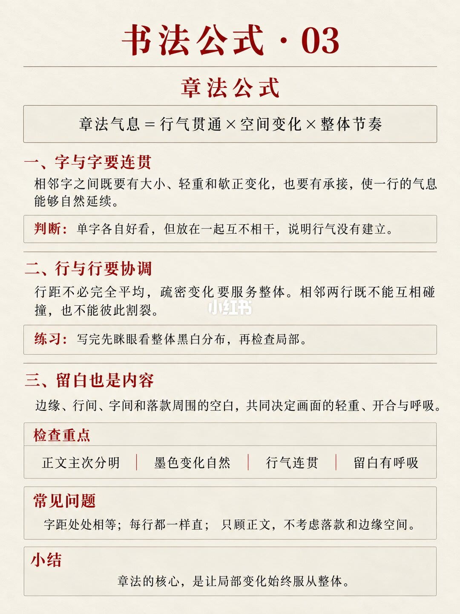

第 1 页：总览——三条线服务整体表现

页眉有中国美术学院标识。主公式强调三件事要相乘，缺一不可。整体表现被拆成线条控制、形神、空间关系，并由「观察—理解—训练」串起来。
左列「线条」：方向、力度、速度；用笔原则写明线条=方向+力度+速度，中锋保证厚度，提按形成轻重；练习要求起收到位、行笔稳定、转折清楚有力。
中列「结构」：关系优先；单字=重心+主次+疏密；主笔决定字势，并处理高低宽窄疏密，局部服从整体；流程是先定重心、找主笔，再上下连接、左右呼应，最后对照范本局部校正。
右列「章法」：行气与留白两层；章法=字距+行距+留白，要保证字间气势贯通、行间疏密协调；练习要求正文与落款主次分明、墨色变化自然、留白有呼吸。
页底总括：书法不是把字写像，而是理解关系、控制变化，并在临摹中不断校正。
第 2 页：线条公式——方向 × 力度 × 节奏

一、方向决定线条骨架：方向不只是笔往哪走，而是起、行、收都有清楚轨迹；方向稳，线才不漂；方向有变化，字势才自然展开。
二、力度形成质感：按不是死压，提不是完全离纸；提按要连续，笔锋始终可控；粗细变化可以有，但不要突然细断或发虚。
三、速度决定节奏：慢而不滞，快而不飘；起收与转折可稍慢，行笔中段按线条需要调节；速度自然变化，线才沉得住、写得完整。
练习重点：中锋行笔、起收完整、提按连贯、转折清楚。常见坑：只盯外形不管笔锋；一味写慢导致僵硬；只会加力，线粗却没质感。小结：先把线写稳、写活，再谈一个字好不好看。
第 3 页：结构关系——重心、主次、空间

开篇定义：结构不等于把笔画摆整齐，而是让重心、主次、疏密、收放、呼应形成稳定关系。
一、先判断重心：看支撑点、倾斜方向与上下力量，判断整体重心；局部可以欹侧，整体必须稳住。练习建议：临写前先花几秒看外轮廓和重心。
二、再区分主次：主笔决定字势，次笔承托呼应；主笔要醒目，但不能脱离其他笔画。判断法：挡住主笔后字势明显变弱，主次关系才算清楚。
三、处理空间关系：比较高低、宽窄、疏密、轻重、开合；不要孤立看一笔，要看它与周围笔画的相对关系。
调整顺序：先定重心 → 再找主笔 → 比较空间 → 最后改局部。常见坑：用力均匀、分布平均；只记笔画位置；局部像了、整体关系却散。小结：临帖不是记位置，而是理解为什么这样安排。
第 4 页：章法公式——行气、空间、节奏

一、字与字要连贯：相邻字可有大小、轻重、欹侧变化，但必须有联系，一行的气才能接上。判断：单字好看却彼此无关，行气就没立住。
二、行与行要协调：行距不必绝对均匀，疏密变化要服务整体；行与行不要撞在一起，也不要断裂。练习：写完眯眼看黑白分布，再抠细节。
三、留白也是内容：边距、字间、行间与落款周围的白，决定整幅的轻重、开合与呼吸。
检查重点：正文与落款主次分明、墨色变化自然、行气连贯、留白有呼吸。常见坑：处处等距、每行笔直、只顾正文忽略落款与边距。小结：章法核心，是让局部变化始终服从整体。
汇总结论
结论
这组图把自学练字收成一条链：先用总览页锁定「本质 × 控制 × 校正」，再分别用线条三变量、结构关系、章法气息把练习可检查化。目标不是把单字描像，而是让关系、变量与临摹校正形成闭环。
支撑页
- 进步公式与三列总框架在第 1/4 页。
- 线条质量=方向×力度×节奏，以及中锋/起收/提按/转折，在第 2/4 页。
- 重心→主次→空间的调整顺序，在第 3/4 页。
- 行气、行间协调与留白，在第 4/4 页。
边界
- 这是笔记作者给出的自学框架与检查清单，不是对某一书体或某一帖的定论。
- 图上没有示范单字笔迹；具体提按幅度、字距数值需结合自己临的范本。
- 笔记正文另有毛笔推荐语句，不在这四张公式图的可见文字里，本文不以产品推荐为论据。